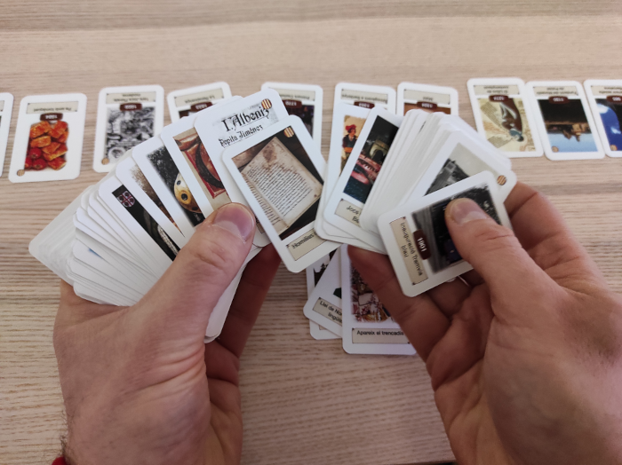
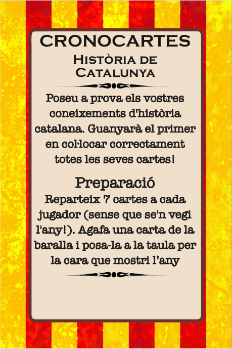
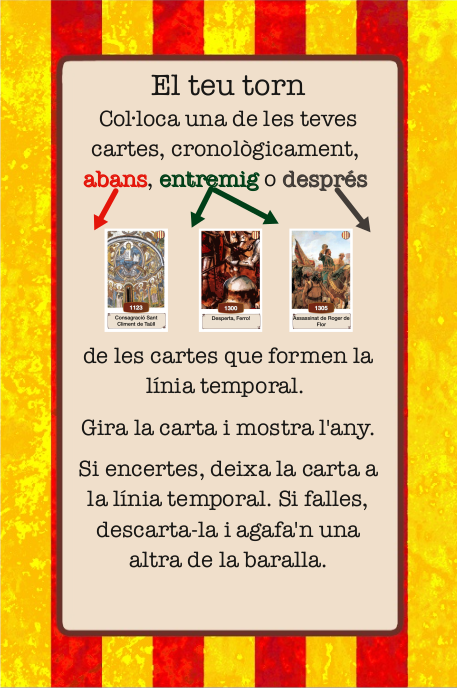

Cronocartes Història de Catalunya
Descobreix la història de Catalunya a través del joc de cartes, Cronocartes, on historiadors rivals competiran per demostrar el seu coneixement de la història de Catalunya.
Cronocartes és un joc de cartes ràpid i familiar: només necessiteu 30 segons per aprendre a jugar i les partides no acostumen a durar més de 20 minuts. Molts adults tenen por de jugar per vergonya a una suposada ignorància en temes històrics, però ja veureu com no n’hi ha per a tant! Us divertireu!


Com es juga
Trobareu les instruccions en una de les cartes de la mateixa baralla:
|  |  |
|---|
Preparació
Seguiu aquests passos per preparar la partida:
- Mescleu bé les cartes i repartiu-ne 7 a cada historiador cara avall (per la cara que no mostra l’any).
- Un cop repartides les cartes, preneu la carta superior de la pila de cartes restant i poseu-la cara amunt de tal manera que l’any ha de quedar a la vista. Aquesta serà la carta inicial de la línia temporal.
Ja esteu a punt per començar!
El teu torn
En el teu torn hauràs d’agafar una de les teves cartes que estan cara avall i col·locar-la a la línia temporal, on creguis que respecta l’ordre cronològic. Després d’haver-te decidit, gira la carta. En aquest moment poden passar dues coses:
- La carta respecta l’ordre cronològic (ben fet!👏), deixa la carta a la línia temporal.
- La carta no respecta l’ordre cronològic (t’has equivocat!😥), descarta la carta i pre-ne una altra de la pila de cartes.
Un cop hagis resolt un d’aquests casos, passa el torn al/la següent historiador/a.
Final del joc
En el moment en què un/a historiador/a col·loca correctament la seva última carta, es dispara el final del joc i s’acaba la ronda (per tal que tots els/les historiadors/es hagin jugat el mateix nombre de torns).
Al final de l’última ronda, el jugador que s’hagi quedat sense cartes guanya la partida!
En cas que a l’última ronda hagi hagut un empat i més d’un/a historiador/a hagi acabat les seves cartes, la victòria es decidirà per mort sobtada: s’aniran jugant cartes i els/les finalistes quedaran eliminats en cas de col·locar incorrectament una carta.
Variant avançada
Si voleu fer el joc una mica més difícil, en comptes de descartar la carta en cas d’equivocació, col·loqueu-la correctament a la línia temporal.
Estratègia
Un consell: tot i que esteu temptats a col·locar primer les cartes que sabeu, heu de fer precisament el contrari! Jugueu primer les que són més dubtoses. Si no ho feu així, a mesura que la línia temporal es vagi poblant de cartes, us serà més difícil afinar l’any i la probabilitat d’equivocar-se serà més alta.